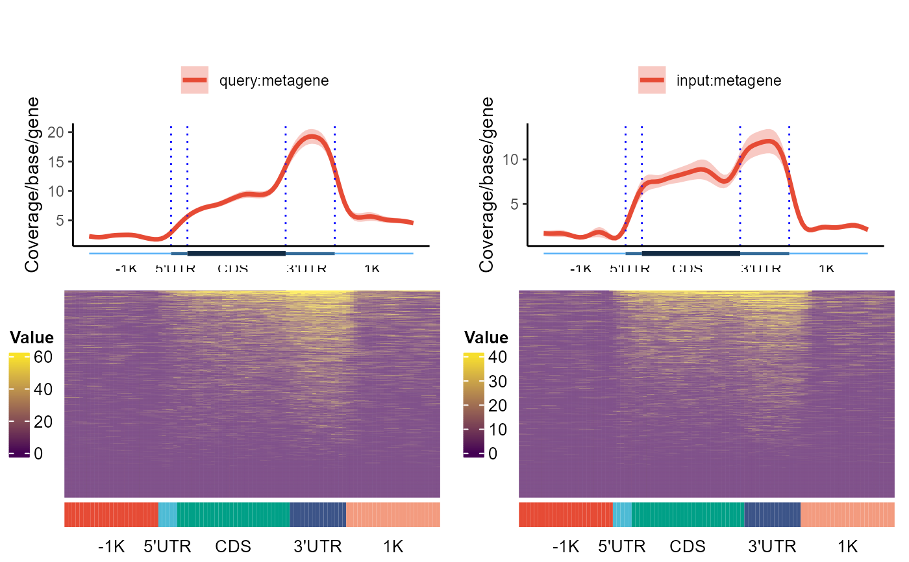
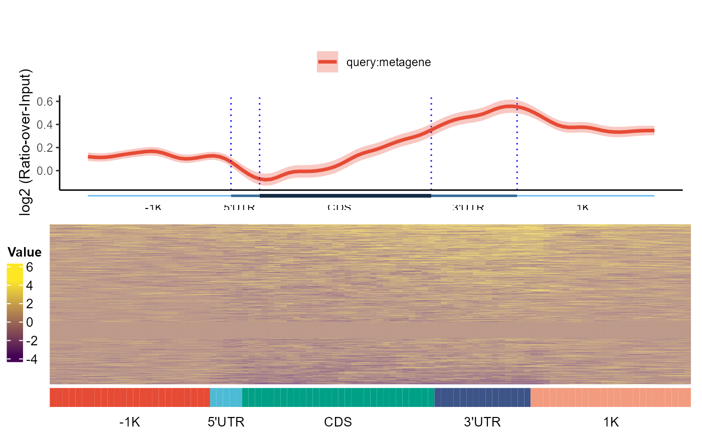

plot_5parts_metagene.RdPlot reads or peak Coverage/base/gene of samples given in the query files around genes. The upstream and downstream windows flanking genes can be given separately, metagene plots are generated with 5'UTR, CDS and 3'UTR segments. The length of each segments are prorated according to the median length of each segments. If Input files are provided, ratio over Input is computed and displayed as well.
plot_5parts_metagene(
queryFiles,
gFeatures_list,
inputFiles = NULL,
importParams = NULL,
verbose = FALSE,
transform = NA,
smooth = FALSE,
scale = FALSE,
stranded = TRUE,
outPrefix = NULL,
heatmap = FALSE,
heatRange = NULL,
rmOutlier = 0,
Ylab = "Coverage/base/gene",
hw = c(8, 8),
nc = 2
)a vector of sample file names. The file should be in .bam, .bed, .wig or .bw format, mixture of formats is allowed
a list of genomic features as output of the function 'prepare_5parts_genomic_features'
a vector of input sample file names. The file should be in .bam, .bed, .wig or .bw format, mixture of formats is allowed
a list of parameters for handle_input
logical, indicating whether to output additional information (data used for plotting or statistical test results)
logical, whether to log2 transform the matrix
logical, indicating whether the line should smoothed with a spline smoothing algorithm
logical, indicating whether the score matrix should be scaled to the range 0:1, so that samples with different baseline can be compared
logical, indicating whether the strand of the feature should be considered
a string specifying output file prefix for plots (outPrefix.pdf)
logical, indicating whether a heatmap of the score matrix should be generated
a numerical vector of two elements, defining range for heatmap color ramp generation
a numeric value serving as a multiplier of the MAD in Hampel filter for outliers identification, 0 indicating not removing outliers. For Gaussian distribution, use 3, adjust based on data distribution
a string for y-axis label
a vector of two elements specifying the height and width of the output figures
integer, number of cores for parallel processing
a dataframe containing the data used for plotting
txdb <- AnnotationDbi::loadDb(system.file("extdata", "txdb_chr19.sql", package="GenomicPlot"))
queryfiles <- system.file("extdata", "treat_chr19.bam", package="GenomicPlot")
names(queryfiles) <- "query"
inputfiles <- system.file("extdata", "input_chr19.bam", package="GenomicPlot")
names(inputfiles) <- "input"
gfeatures <- prepare_5parts_genomic_features(txdb, meta=TRUE, nbins=100, fiveP=-1000,
threeP=1000, longest=TRUE, verbose=FALSE)
importParams <- list(offset=0, fix_width=150, fix_point="start", norm=TRUE,
useScore=FALSE, outRle=TRUE, useSizeFactor=FALSE, genome="hg19")
df <- plot_5parts_metagene(queryFiles=queryfiles, gFeatures=list("metagene"=gfeatures),
inputFiles=inputfiles, scale=FALSE, verbose=TRUE, Ylab="Coverage/base/gene",
importParams=importParams, smooth=TRUE, stranded=TRUE, outPrefix=NULL, heatmap=TRUE,
rmOutlier=0, heatRange=NULL, transform="log2", nc=2)
#> [1] "Reading bam file: C:/Users/greenblatt/AppData/Local/Temp/RtmpqQgWpD/temp_libpath58243c1a4510/GenomicPlot/extdata/treat_chr19.bam"
#> cached .rds file is used
#> [1] "Reading bam file: C:/Users/greenblatt/AppData/Local/Temp/RtmpqQgWpD/temp_libpath58243c1a4510/GenomicPlot/extdata/input_chr19.bam"
#> cached .rds file is used
#> [1] "computing coverage for query files in metagene"
#> [1] "Number of features:"
#> -1K 5'UTR CDS 3'UTR 1K
#> 1328 1328 1328 1328 1328
#> [1] "Number of scaled bins"
#> -1K 5'UTR CDS 3'UTR 1K
#> 25 5 30 15 25
#> [1] "query"
#> [1] "-1K"
#> [1] "5'UTR"
#> [1] "CDS"
#> [1] "3'UTR"
#> [1] "1K"
#> [1] "input"
#> [1] "-1K"
#> [1] "5'UTR"
#> [1] "CDS"
#> [1] "3'UTR"
#> [1] "1K"
#> [1] "Preparing data for individual plotting"
#> [1] "Inspecting matrix"
#> n_invalid fraction_invalid
#> infinite 0 0.0000000
#> NA 0 0.0000000
#> NaN 0 0.0000000
#> zero 92852 0.6991867
#> Imputing missing values. Matrix quartiles:
#> 0% 25% 50% 75% 100%
#> 0.000000 0.000000 0.000000 5.782597 1546.405987
#> Matrix quantiles after imputing:
#> 0% 25% 50% 75% 100%
#> 2.054642e-02 2.054642e-02 2.054642e-02 5.782597e+00 1.546406e+03
#> [1] "The imputed value is: 0.0205464230814243"
#> [1] "drawing heatmap"
#> [1] "quantile(fullMatrix, c(seq(0.9, 1, 0.005)), na.rm=TRUE)"
#> 90% 90.5% 91% 91.5% 92% 92.5% 93%
#> 22.32739 24.34529 26.33655 27.61439 27.61439 28.66513 31.41137
#> 93.5% 94% 94.5% 95% 95.5% 96% 96.5%
#> 34.39015 34.51799 36.95455 40.92905 41.42348 46.47800 49.01555
#> 97% 97.5% 98% 98.5% 99% 99.5% 100%
#> 55.22879 61.30403 68.11561 77.89153 96.65037 129.61566 1546.40599
#> [1] "Inspecting matrix"
#> n_invalid fraction_invalid
#> infinite 0 0.0000000
#> NA 0 0.0000000
#> NaN 0 0.0000000
#> zero 94719 0.7132455
#> Imputing missing values. Matrix quartiles:
#> 0% 25% 50% 75% 100%
#> 0.000000 0.000000 0.000000 2.585708 2011.731307
#> Matrix quantiles after imputing:
#> 0% 25% 50% 75% 100%
#> 0.0101853 0.0101853 0.0101853 2.5857081 2011.7313075
#> [1] "The imputed value is: 0.0101852999395645"
#> [1] "drawing heatmap"
#> [1] "quantile(fullMatrix, c(seq(0.9, 1, 0.005)), na.rm=TRUE)"
#> 90% 90.5% 91% 91.5% 92% 92.5% 93%
#> 13.42579 14.81029 16.23305 16.62241 17.08414 18.89030 20.77801
#> 93.5% 94% 94.5% 95% 95.5% 96% 96.5%
#> 20.77801 22.77907 24.93361 26.20412 29.08922 31.14510 33.24482
#> 97% 97.5% 98% 98.5% 99% 99.5% 100%
#> 37.40042 41.55602 47.89401 55.32474 70.42364 107.94229 2011.73131
#> [1] "Preparing data for ratio plotting"
#> [1] "1546.40598680032 0.0101852999395645 1"
#> [1] "Inspecting matrix"
#> n_invalid fraction_invalid
#> infinite 0 0
#> NA 0 0
#> NaN 0 0
#> zero 0 0
#> Imputing missing values. Matrix quartiles:
#> 0% 25% 50% 75% 100%
#> 4.010136e-03 1.010257e+00 1.010257e+00 1.010257e+00 3.048130e+02
#> Matrix quantiles after imputing:
#> 0% 25% 50% 75% 100%
#> 4.010136e-03 1.010257e+00 1.010257e+00 1.010257e+00 3.048130e+02
#> [1] "The imputed value is: 0.00200506783333769"
#> [1] "drawing heatmap"
#> [1] "quantile(fullMatrix, c(seq(0.9, 1, 0.005)), na.rm=TRUE)"
#> 90% 90.5% 91% 91.5% 92% 92.5% 93% 93.5%
#> 2.967890 2.967890 2.967890 2.967890 2.967890 3.088703 3.277441 3.490686
#> 94% 94.5% 95% 95.5% 96% 96.5% 97% 97.5%
#> 3.684233 3.873607 3.873607 3.873607 4.015833 4.285837 4.425721 4.475830
#> 98% 98.5% 99% 99.5% 100%
#> 4.824049 4.924864 5.135858 5.609633 8.251781
#> [1] "Start plotting"


#> [1] "plot_5parts_metagene runs successfully!"